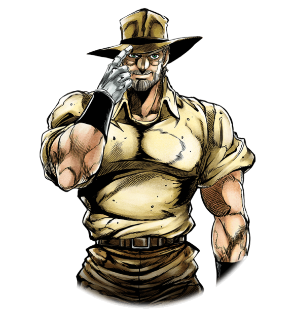

Protagonistas
Jotaro Kujo
Jotaro o más conocido como "Jojo" era un chico sobresaliente, un estudiante modelo, amable y de gran corazón. Pero todo cambió cuando cumplió 17 años, al mismo tiempo que DIO despertó de su sueño tras 100 años de estar dormido en el fondo del océano. Cuando DIO despertó su Stand, el cuerpo de Jonathan se conectó de cierta forma a sus descendientes, los cuales también despertaron su Stand, incluyendo a Jotaro, quien de pronto se encontró acompañado de una poderosa entidad espiritual de forma humanoide que no se separaba de su lado. Stand: Star Platinum
Joseph Joestar
Es un hombre con un sentido del humor alegre y que prefiere tontear alrededor a tener cualquier responsabilidad, Joseph es bastante flirteador. Regularmente comenta sobre la voluptuosidad de las mujeres. Por su propia admisión, sus oraciones más odiadas son "trabajo duro" y "trabajar duro". Despertó su habilidad gracias al despertar de DIO en el fondo del oceano. Stand: Hermit Purple
Muhammed Avdol
Avdol, es un tipo serio y estricto, posee un fuerte sentido del deber y la lealtad, fue una vez un adivino que tenía un negocio donde leía el futuro de las personas en cartas del Tarot, cierto día fue visitado por DIO quien le dijo que estaba interesado en sus habilidades, pero DIO se refería al Stand de Avdol, Magician's Red. Avdol recordó la advertencia de su viejo amigo Joseph Joestar sobre DIO, que era muy peligroso y entonces escapó y contacto a Joseph.. Stand: Magician's Red
Noriaki Kakyoin
Aunque aparenta ser frío, en realidad es muy buena persona y un luchador muy leal. Siempre busca apoyar a sus compañeros y lucha por aquello que considera correcto. Se preocupa por sus amigos y hará todo lo posible por ellos. Ha demostrado ser muy inteligente, siendo capaz de descubrir los secretos de los Stands enemigos Stand: Hierophant Green.
Jean Pierre Polnareff
Polnareff es un francés presumido pero honorable y bien intencionado. El rasgo más definitorio de Polnareff es su honor. Del mismo modo, Polnareff sale como arrogante, de confrontación y puede ser bastante impulsivo. Polnareff es también el miembro menos serio del grupo. Él es quizás el que une a la mayoría de sus compañeros, casualmente bromeando con Kakyoin, Joseph e incluso Jotaro. Siendo muy extrovertido Stand: Silver Chariot
Iggy

Iggy es visto inicialmente como un perro particularmente antisocial con una mala personalidad, aunque despues de unas cuantas aventuras se relaciona de mejor manera con el grupo. Su comida favorita es la goma de mascar con sabor a café. También le gusta mascar el cabello humano y tirar flatulencias en el rostro de las personas. Iggy valora su independencia, y tiene una alta opinión de sí mismo. Stand: The Fool